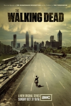

BurningSeries - Simpsons und weitere Serien kostenlos online sehen
The Walking Dead Staffel 2
 Danke an DaimonTay
Episoden:
Blutsbande Bloodletting
Eine Rückblende zeigt, wie Shane Lori erzählt, dass Rick bei einem Schussgefecht verletzt wurde und wie Lori es ihrem Sohn beibringen muss. Shane und Rick bringen den angeschossenen Carl unter Führung des Jägers Otis zu einem Landhaus, in der eine Gruppe Überlebender wohnt...
Bewertung:
- 5 von 5 (4 Stimmen)